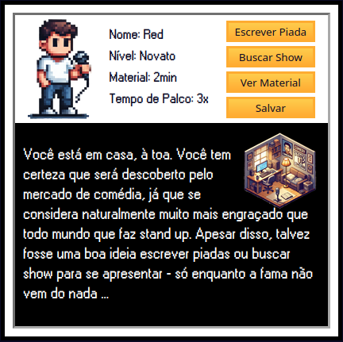

OPEN MIC - O RPG
Um RPG text-based sobre a dura vida de um iniciante na comédia stand up

Pelo menos no joguinho você tem graça
Conheça o processo de um iniciante de comédia stand up, o open-mic.
Escreva piadas, faça shows, tome água e mais importante: não aceite
que ainda é um open-mic.
Open Mic - O RPG simula o trabalho de um comediante stand up e
ensina de forma divertida o caminho das punchlines.
Eu ia desenvoler o jogo de qualquer forma porém surgiram despesas
médicas complicadas então aproveitei para criar um
Sistema de Patronagem.
Por dezão (10R$) seu nome já vai pros créditos :)
pix: carvalhoillan@gmail.com
O Jogo
Este é um RPG solo baseado em texto, com ilustrações em pixel-art, que explora o mundo da comédia stand-up de uma maneira única. Em vez de focar no conteúdo específico das piadas, o jogo mergulha na verdadeira dinâmica do trabalho de um comediante. Como jogador, você estará no controle de um aspirante a humorista, gerenciando cada etapa da sua carreira: desde a criação e escrita de novas piadas, a busca por shows e oportunidades de testar seu material até a consolidação de sua carreira. O desafio está em decifrar o que funciona e o que não funciona, lidando com diferentes tipos de plateias, cada uma com seu nível de dificuldade, e se adaptando a elas para obter os melhores resultados.
Trata-se de entender como funciona o ciclo do stand-up — a constante tentativa e erro, a modificação das piadas, as oportunidades únicas de abrir para veteranos, conseguir shows corporativos ou até aparições na mídia. Você terá que decidir coisas como: Viajando como opener, é mais importante focar no seu material ou em criar conexões com outros comediantes? À medida que o jogo é desenvolvido até sua versão final, você também poderá explorar diferentes estilos de comédia, evoluir seu personagem e criar uma base de fãs, tudo isso enquanto busca seu lugar ao sol no competitivo universo da comédia.
Open Mic - O RPG será desenvolvido por etapas:
- Mecânicas Centrais: o personagem será capaz de criar piada, buscar show e testar seu material.
- Shows: cada apresentação terá um nível de dificuldade distinto e o resultado do desempenho de cada piada ao final. Assim é possível ao jogador ir selecionando piadas mais adequadas em cada show e remover as piadas que identificar serem fracas.
- Status: acompanhe as métricas de seu personagem como "tempo de palco" e "minutos de material".
FASE 1: A Fundação
- Avatar: escolha entre dois modelos de avatar.
- Piadas: além de remover, o personagem também terá como reescrever a piada para aprimorá-la.
- Níveis: O personagem terá níveis de acordo com seu "minutos de material", entre "Novato", "Opener", "Elenco" e "Headliner".
- Eventos: Eventos surpresa exclusivos acontecerão aleatoriamente ou após um acontecimento. como abrir shows para um veterano, conseguir uma apresentação corporativa ou participar de mídia (TV, podcast, rádio). Cada evento terá escolhas que afetarão os resultados, com cenários como equilibrar o foco entre o material e o networking.
FASE 2: Customização e Eventos Aprimorados
- Estilo de Humor: Piadas e Shows ganham tipos. O personagem poderá optar pela estrutura (oneliner, storytelling, bit, prop) e tipo de conteúdo (limpo, sujo, proibidao, humor negro etc). Cada opção acarretará em consequências no desempenho dos shows, variando com fatores como plateia e tipo de show.
- Escrever Piadas: Criação de piadas ganha duas opções, "sentar e escrever" e "anotar durante o dia", cada método tem vantagens e desvantagens próprias.
FASE 3: Estilos de Comédia e Técnicas de Escrita de Piadas
- Construa base de fãs: Crie conteúdo para atrair fãs e desbloquear mais oportunidades de apresentações. Ajuste sua estratégia de material e conteúdo para atrair e manter fãs, com base em suas preferências.
- Motivação e Teoria: Adição das métricas "Teoria" e "Motivação", assim como capacidade de estudar e assistir shows por meios diversos (youtube, livros, documentários, cursos etc).
FASE 4: Criação de Conteúdo e Engajamento com os Fãs
Níveis de Patronagem
Desenvolver esse jogo de RPG text-based já era um projeto que eu ia tocar de qualquer forma, já que eu acho que cumpr várias funções interessantes, inclusive a de ensinar e guiar futuras (e atuais) gerações de comediantes brasucas. Infelizmente a vida é uma caixinha de surpresas e atualmente preciso levantar fundos para tratamento médico de minha mulher, então uni o útil (e necessário) ao agradável e criei o seguinte sistema de patronagem
pix: carvalhoillan@gmail.com
| Contribuição | Recompensa |
|---|---|
| 10R$ (dezão) | Nome nos créditos |
| 25R$ (vinte cincao) | + Jogo liberado fases beta |
| 50R$ (cinquentão) | + Menção in-game (dentro do jogo) |
| 100R$ (cenzão) | + NPC com ilustração (evento exclusivo) |